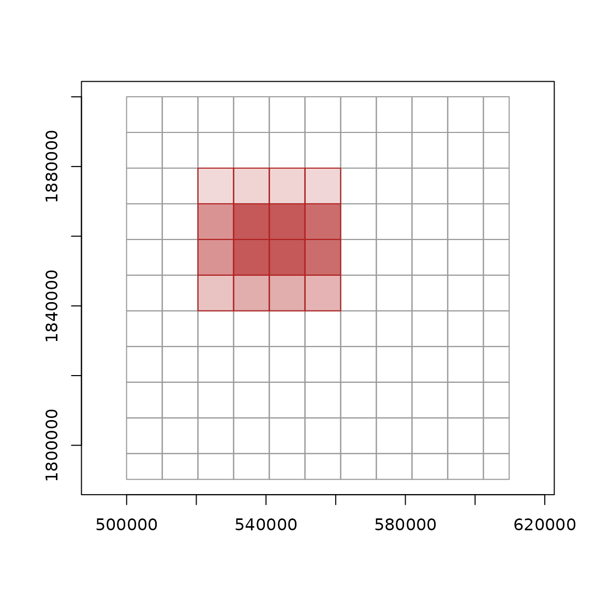
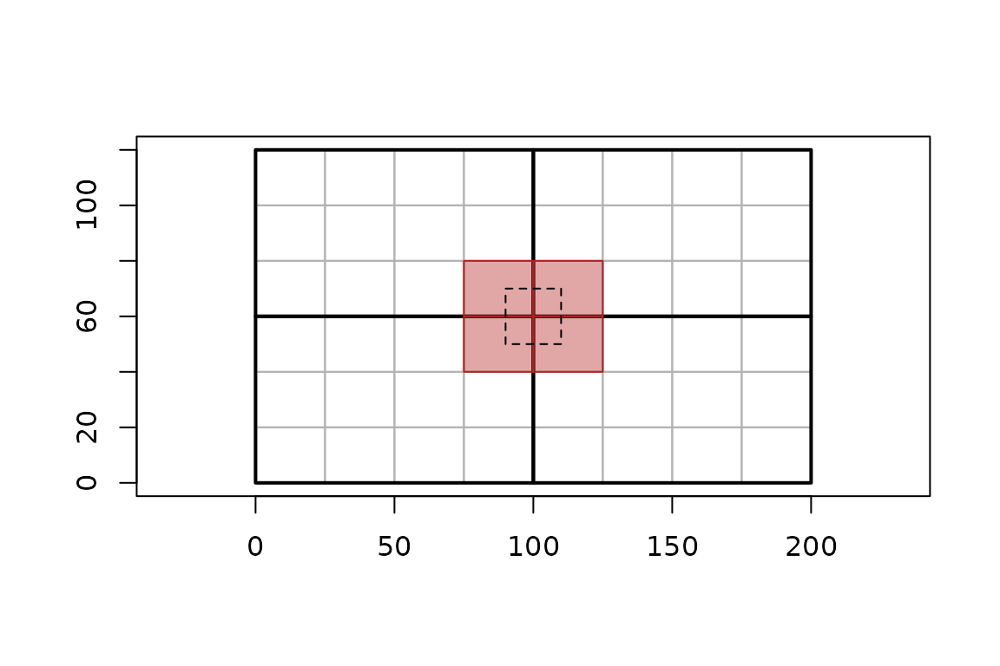

Array stores are read in chunks: a GeoTIFF in blocks, a zarr or
netCDF array in its chunks. A read touches every chunk its selection
overlaps, and pays for each one whole, so the chunk layout decides what
a query costs. xr_chunks() maps it. It returns a table with
one row per chunk that a statement touches: each chunk’s index range and
coordinate extent along every dimension, how many of its cells the
statement selects, and a rectangle over the last two dimensions. Only
coordinates and metadata are read, never the data.
The blocks of a COG
A Sentinel-2 true-colour image, one 10980 by 10980 pixel UTM tile stored as a Cloud-Optimized GeoTIFF in 1024 by 1024 blocks, read through the gdalxarray engine (it needs the GDAL Python bindings):
tci <- "/vsicurl/https://sentinel-cogs.s3.us-west-2.amazonaws.com/sentinel-s2-l2a-cogs/36/Q/WD/2020/7/S2A_36QWD_20200701_0_L2A/TCI.tif"
cog <- dbConnect(xarray(), tci, engine = "gdalxarray", multidim = FALSE)
blocks <- xr_chunks(cog, "ds.band_data.isel(band=0)")
attr(blocks, "chunking")
#> [1] "storage"
nrow(blocks)
#> [1] 121
head(blocks[, c("y_chunk", "x_chunk", "y_start", "y_stop", "x_start",
"x_stop", "cells")], 3)
#> y_chunk x_chunk y_start y_stop x_start x_stop cells
#> 1 0 0 0 1024 0 1024 1048576
#> 2 0 1 0 1024 1024 2048 1048576
#> 3 0 2 0 1024 2048 3072 1048576
table(blocks$cells)
#>
#> 547600 757760 1048576
#> 1 20 100The blocks along the right and bottom edges are partial, which the
cells column shows. Each dimension gets _chunk
(the chunk’s index along it), _start and _stop
(its 0-based index range, stop exclusive, as in
isel(d=slice(start, stop))) and, when the dimension has a
coordinate, _min and _max (its extent, to the
cell edges):
blocks[1, c("y_min", "y_max", "x_min", "x_max")]
#> y_min y_max x_min x_max
#> 1 1889780 1900020 499980 510220
class(blocks$geometry)
#> [1] "wk_rct" "wk_rcrd"
sf::st_crs(wk::wk_crs(blocks$geometry))$Name
#> [1] "WGS 84 / UTM zone 36N"geometry is a wk::rct() carrying the CRS,
so it can be drawn, intersected, or converted with
sf::st_as_sfc().
What a selection touches
On a selection, the table lists only the chunks the selection
touches, and selected counts the cells it reads from
each:
win <- xr_chunks(cog,
"ds.band_data.isel(band=0, y=slice(3000, 5500), x=slice(2500, 6000))")
nrow(win)
#> [1] 16
win[, c("y_chunk", "x_chunk", "cells", "selected")] |> head()
#> y_chunk x_chunk cells selected
#> 1 2 2 1048576 41184
#> 2 2 3 1048576 73728
#> 3 2 4 1048576 73728
#> 4 2 5 1048576 63360
#> 5 3 2 1048576 585728
#> 6 3 3 1048576 1048576
## the share of the cells in the touched blocks that the window uses
sum(win$selected) / sum(win$cells)
#> [1] 0.5215406
used <- win$selected / win$cells
plot(blocks$geometry, border = "grey60")
plot(win$geometry, add = TRUE, border = "firebrick",
col = rgb(178, 34, 34, alpha = 255 * (0.15 + 0.6 * used),
maxColorValue = 255))
dbDisconnect(cog)The interior blocks are read whole and the edge blocks only partly, but all of them are fetched.
Chunks in time
Chunking is not only spatial. The ARCO ERA5 store on Google Cloud keeps one hour per chunk, each a whole global field:
reticulate::py_require(c("zarr", "gcsfs"))
era <- dbConnect(xarray(),
"gs://gcp-public-data-arco-era5/ar/full_37-1h-0p25deg-chunk-1.zarr-v3",
engine = "zarr", storage_options = reticulate::dict(token = "anon"))
## a point time series for January 1980
pt <- xr_chunks(era,
"ds['2m_temperature'].sel(time=slice('1980-01-01', '1980-01-31'),
latitude=-42.75, longitude=147.25)")
nrow(pt)
#> [1] 744
sum(pt$selected)
#> [1] 744
sum(pt$cells)
#> [1] 772450560A month of hourly values at one point touches 744 chunks, and reads a million cells for every value it uses. This store’s layout favours global maps at an instant, not long series at a point.
The whole variable has more chunks than the default limit of a
million rows (max_chunks, or
getOption("xrdbi.max_chunks")), so mapping it needs
force = TRUE:
Several variables
A Dataset statement maps every data variable in it under the one
selection, and array says whose chunk each row is. Here are
two surface variables over six hours:
two <- xr_chunks(era, paste0(
"ds[['2m_temperature', '10m_u_component_of_wind']]",
".sel(time=slice('1980-01-01T00', '1980-01-01T05'))"))
table(two$array)
#>
#> 10m_u_component_of_wind 2m_temperature
#> 6 6
two[c(1, 7), c("array", "time_chunk", "time_min", "cells")]
#> array time_chunk time_min cells
#> 1 2m_temperature 701256 1980-01-01 1038240
#> 7 10m_u_component_of_wind 701256 1980-01-01 1038240The variables need not share dimensions. A variable has missing
values in the columns of any dimension it lacks: here that is
level for the surface variable, beside
geopotential on 37 pressure levels:
mix <- xr_chunks(era, paste0(
"ds[['2m_temperature', 'geopotential']]",
".sel(time='1980-01-01T00', latitude=slice(-40, -45), longitude=slice(145, 150))"))
mix[, c("array", "level_chunk", "latitude_chunk", "cells", "selected")]
#> array level_chunk latitude_chunk cells selected
#> 1 2m_temperature NA 0 1038240 441
#> 2 geopotential 0 0 38414880 16317
dbDisconnect(era)Shards
A zarr v3 array can be sharded: its chunks are grouped into larger
stored objects, the shards, so a store holds fewer, bigger files while
reads can still fetch single chunks. level = "shards" maps
the shards, and at the chunk level each chunk gets a _shard
column per dimension, the shard it lives in. A small sharded store:
path <- file.path(tempfile(), "sharded.zarr")
dir.create(dirname(path))
reticulate::py_run_string(sprintf("
import xarray as xr, numpy as np, pandas as pd
xr.Dataset({'v': (('time', 'y', 'x'), np.zeros((4, 120, 200), 'float32'))},
coords={'time': pd.date_range('2026-01-01', periods=4),
'y': np.arange(120) + 0.5, 'x': np.arange(200) + 0.5}).to_zarr(
'%s', mode='w', zarr_format=3, consolidated=False,
encoding={'v': {'chunks': (1, 20, 25), 'shards': (2, 60, 100)}})
", path))
z <- dbConnect(xarray(), path, engine = "zarr", consolidated = FALSE)
shards <- xr_chunks(z, "ds.v", level = "shards")
nrow(shards)
#> [1] 8
unique(shards$cells)
#> [1] 12000
chunks <- xr_chunks(z, "ds.v")
nrow(chunks)
#> [1] 192
table(paste(chunks$y_shard, chunks$x_shard))
#>
#> 0 0 0 1 1 0 1 1
#> 48 48 48 48
win <- xr_chunks(z, "ds.v.isel(time=1, y=slice(50, 70), x=slice(90, 110))")
win[, c("y_chunk", "x_chunk", "y_shard", "x_shard", "selected")]
#> y_chunk x_chunk y_shard x_shard selected
#> 1 2 3 0 0 100
#> 2 2 4 0 1 100
#> 3 3 3 1 0 100
#> 4 3 4 1 1 100
one <- chunks$time_chunk == 0
plot(chunks$geometry[one], border = "grey70")
plot(shards$geometry[shards$time_chunk == 0], add = TRUE, lwd = 2)
plot(win$geometry, add = TRUE, col = rgb(178, 34, 34, 100, maxColorValue = 255),
border = "firebrick")
rect(90, 50, 110, 70, lty = 2) # the window itself
dbDisconnect(z)The window (dashed) is 20 by 20 cells, but it crosses a corner, so it touches four chunks (shaded) in four shards (heavy lines).
Keys for byte references
A map of storage chunks starts with the chunk key of a byterefs table:
array, and dim_0, dim_1, …, the
chunk’s 0-based position along each stored dimension, in the variable’s
dimension order. That is the same as the _chunk columns,
under the names other readers use:
chunks[1:3, c("array", "dim_0", "dim_1", "dim_2", "time_chunk", "y_chunk",
"x_chunk")]
#> array dim_0 dim_1 dim_2 time_chunk y_chunk x_chunk
#> 1 v 0 0 0 0 0 0
#> 2 v 0 0 1 0 0 1
#> 3 v 0 0 2 0 0 2byterefs views (refs_<array>) and zaro’s plans
(zaro_plan()) are keyed the same way, one array at a time.
xr_chunks() reads no bytes, so for each chunk’s presence,
path and byte range, join its map to one of those on the keys. In a
sharded array the keys index the inner chunks, as byterefs rows do, so a
shard map has no keys. With zaro, each chunk’s shard
object and its byte range within it come from the shard index:
keys <- c("dim_0", "dim_1", "dim_2")
p <- zaro::zaro_plan(zaro::zaro(path), "v", chunks = as.matrix(chunks[keys]))
merge(chunks, as.data.frame(p)[c(keys, "present", "path", "offset", "size")],
by = keys)Where chunk shapes come from
Chunk shapes come from the variable’s
encoding["preferred_chunks"], which xarray’s backends set
from the storage layout: zarr, netCDF through netCDF4 or h5netcdf, and
GDAL through gdalxarray, classic and multidimensional. The
chunking attribute says which source was used:
-
"storage": the storage layout, as above -
"shards": the shards, withlevel = "shards" -
"dask": the dask chunks of a dask-backed variable that records no storage layout -
"none": no chunking known; the variable is one chunk
The selection is placed on the stored grid by its coordinate values,
so it must be an orthogonal selection of stored variables, by
sel()/isel() with labels, slices or lists. A
pointwise selection onto a new dimension cannot be placed. Shards, dask
chunks and whole variables are not storage chunks, so their maps have no
dim_0 .. keys; for a Dataset whose variables differ,
chunking has one value per variable.
On a curvilinear grid, each chunk also gets the envelope of its block of 2-D longitude and latitude: the curvilinear grids article shows one.
Where next
-
?xr_chunksdocuments every column. - Rasters reads the cells themselves.